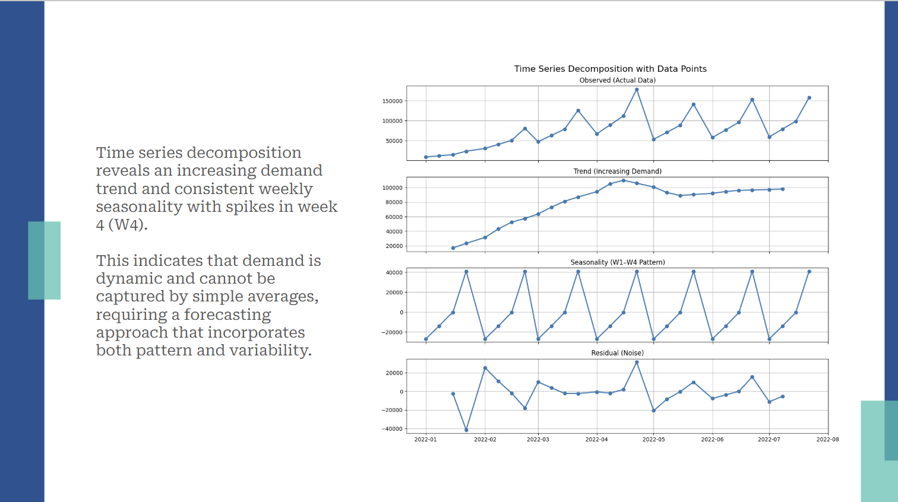
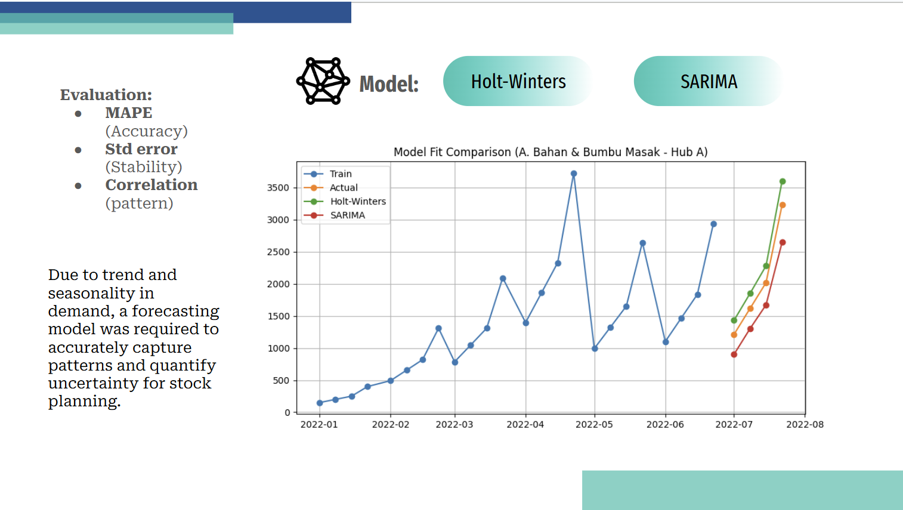
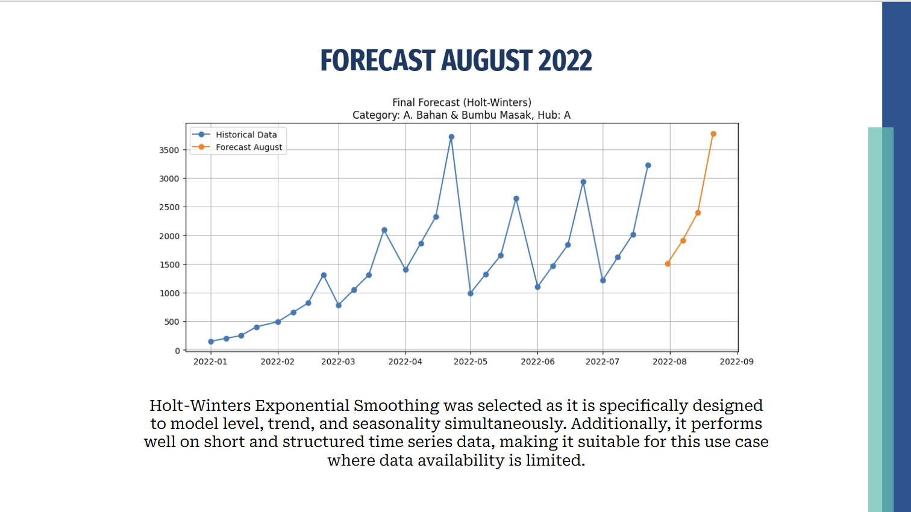
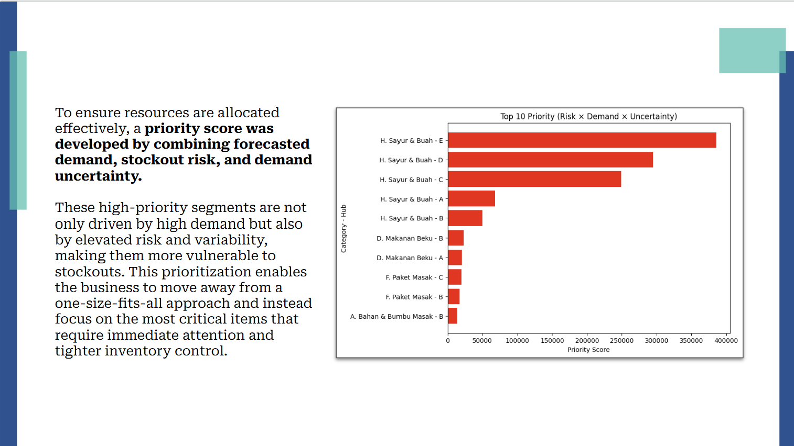

Disclaimer: Stock Planning Forecast Analysis for Quick Commerce project is a part of RevoU Data Insight Project, a 4-week case study designed to analyze customized datasets and address business challenges. Supervised by RevoU, this project hones analytical skills, strengthens problem-solving abilities, and guides students in delivering actionable insight.
QuickU established five new distribution hubs in January 2022, creating challenges in maintaining optimal inventory levels due to unstable demand patterns and the absence of a structured forecasting system. This project analyzed historical sales data from January–July 2022 to develop a data-driven stock planning strategy for August 2022, aiming to reduce stockout and overstock risks while improving operational efficiency.